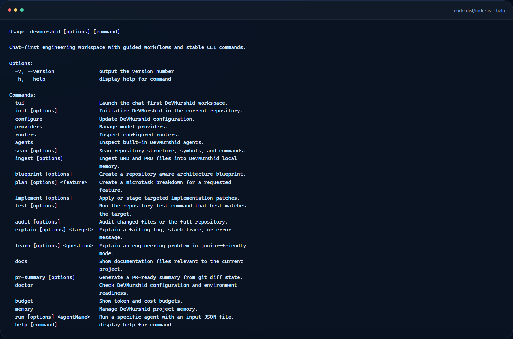
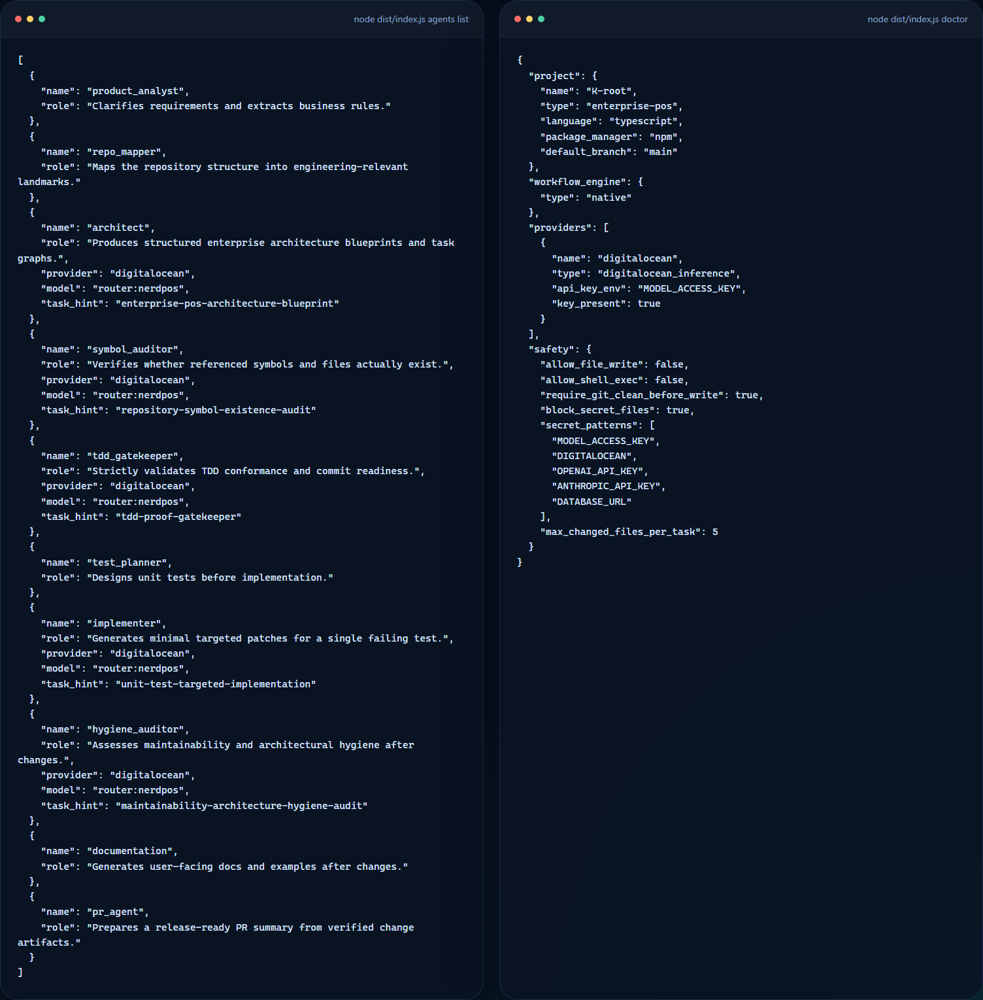

Command surface
CLI help and workflow breadth
The shipped command surface already covers scan, blueprint, plan, implement, audit, explain, learn, and PR-summary workflows.
Developer tools · agentic workflow system
DeVMurshid is a terminal workspace for scanning repositories, building architecture blueprints, decomposing work, explaining errors, and supporting implementation under tighter engineering controls.

Evidence
This showcase uses real CLI output captured from the working build so the public surface reflects actual product behavior instead of speculative screenshots.
The shipped command surface already covers scan, blueprint, plan, implement, audit, explain, learn, and PR-summary workflows.
Product analysis, repository mapping, architecture, symbol verification, TDD gating, implementation, hygiene, and PR preparation.

Boundary